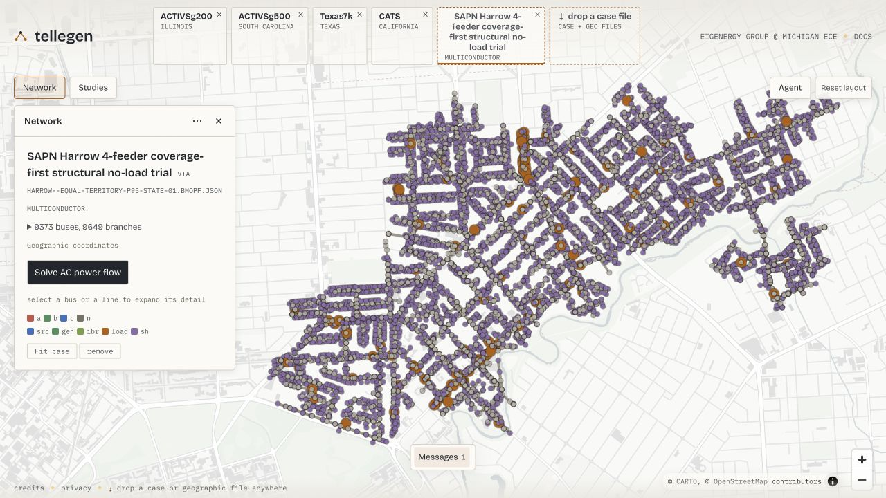

Visualizing a case with Tellegen
Drag and drop a BMOPF JSON file onto Tellegen to explore the distribution network in your browser. Tellegen provides the interactive viewer; BMOPFTools prepares, writes, and checks the case. You do not need to install Tellegen or run a Julia solver to inspect a file.

The live Tellegen viewer, captured on 20 October 2026. The SAPN Harrow BMOPF case from BMOPFDraftData opens directly using its bus latitude/longitude fields: 9,373 buses, 9,532 lines and 117 transformers. This is a provisional model shown for visual inspection, not a validated operating network or a solved power-flow result. It is separate from the downloadable four-bus example below.
Network-model contributions: © 2026 Energex Network Model contributors (CC BY-SA 4.0). Geometry: SA Power Networks, supplied by the Government of South Australia through Location SA; no endorsement is implied. Basemap: CARTO / OpenStreetMap contributors. See the screenshot source and attribution.
What Tellegen offers
- Interactive inspection: explore network topology, select equipment, and inspect bus, line, load and transformer attributes with terminal detail.
- Distribution power flow: for supported models, calculate individual terminal voltages, conductor currents and source powers, with voltages relative to a declared neutral. Active/reactive load edits trigger fresh nonlinear power-flow solves using a retained numerical session.
- Saved studies: retain supported inputs and solved states, and export/import them for further exploration.
- Transmission studies: the wider framework also supports DC OPF, AC power flow, the SOCWR relaxation, and supported sensitivity previews and re-solves. These are separate from the multiconductor distribution workflow.
See Talkington et al. (2026) for the framework and its evaluation, and Tellegen's documentation for current capabilities.
Open your case
Write your network dictionary to a BMOPF case file:
using BMOPFTools net = parse_bmopf("case.json") # or net = from_dss("Master.dss") write_bmopf(net, "case_for_tellegen.json")Open tellegen.dev and drag
case_for_tellegen.jsononto the page's drop a case file control. Drop the network case, rather than a solution-only JSON or a Markdown report.Inspect the network and select a bus to explore its equipment and terminal detail. If the case has no coordinates, follow the viewer's placement prompt to place its topology layout.
Tellegen's local-file workflow parses dropped cases locally in the browser using PowerIO and WebAssembly; local case files are not uploaded to its solver service. The hosted site and map resources still require network access.
Latitude and longitude
For geographic rendering, Tellegen's PowerIO reader accepts latitude and longitude subfields on each bus. For example, a bus entry can contain:
{
"terminal_names": ["1", "2", "3", "n"],
"latitude": -27.5,
"longitude": 153.0
}Use geographic coordinates in decimal degrees from your source data. write_bmopf preserves these fields by default, so existing bus positions travel with the file you drop onto Tellegen. Coordinates are optional: without them, the viewer can generate a topology layout for manual placement. That layout is a drawing aid, not evidence of the network's geographic location.
sideload_coordinates! can attach positions from a headerless bus_id,x,y CSV. It copies x to longitude and y to latitude without checking or transforming the coordinate system. Use it for geographic placement only when you know the source values are longitude/latitude; projected or arbitrary drawing coordinates must not be relabelled as geography. For companion geographic or drawing files, see Tellegen's display-data guide.
Bus latitude and longitude are viewer extensions outside the current bundled BMOPF bus schema. To omit them for a strict schema consumer, use write_bmopf(net, "case_strict.json"; include_coordinates=false). This does not mutate net, but the omitted positions cannot be recovered from that file. The package's schema_check excludes these known extensions when checking the core model; it does not validate their coordinate system.
Try a small four-wire case
This original synthetic feeder has four buses, three lines and two loads, with an explicit neutral. It has no geographic coordinates and needs only BMOPFTools to prepare. Its illustrative electrical parameters are not calibrated to a utility network.
using BMOPFTools
fixture = joinpath(pkgdir(BMOPFTools), "test", "data", "case_development", "feeder.json")
net = parse_bmopf(fixture)
write_bmopf(net, "tellegen-example.json")
println(length(net["bus"]), " buses, ", length(net["line"]), " lines, ",
length(net["load"]), " loads")4 buses, 3 lines, 2 loadsDownload the BMOPFTools-written example, then drag it onto Tellegen and follow the placement prompt. Use the same feeder in Developing OPF case families to prepare different operating conditions.
Viewing and calculation support
Opening a case is useful for inspection; it does not establish schema validity, electrical fidelity, or solver support. Run analyze to inspect the package's coded Findings, and use profile_solution for compatible solver results.
Tellegen also offers multiconductor AC power flow for supported equipment. This uses prescribed loads and sources; viewing a BMOPF case does not imply support for multiconductor OPF or the transmission demo's LMP and sensitivity controls. Read the viewer's import diagnostics and calculation limitations for your case.
The package integration and broader fixture validation are tracked in issue #207; coordinate spaces and preservation are tracked in issue #254.
Reference
Samuel Talkington, Frederik Geth, Qian Zhang, Le Xie, and Skyler Liu. Interactive Power Flow in the Browser. ACM DXConf 2026. doi:10.1145/3847238.3849038. Preprint: arXiv:2610.01922v1.